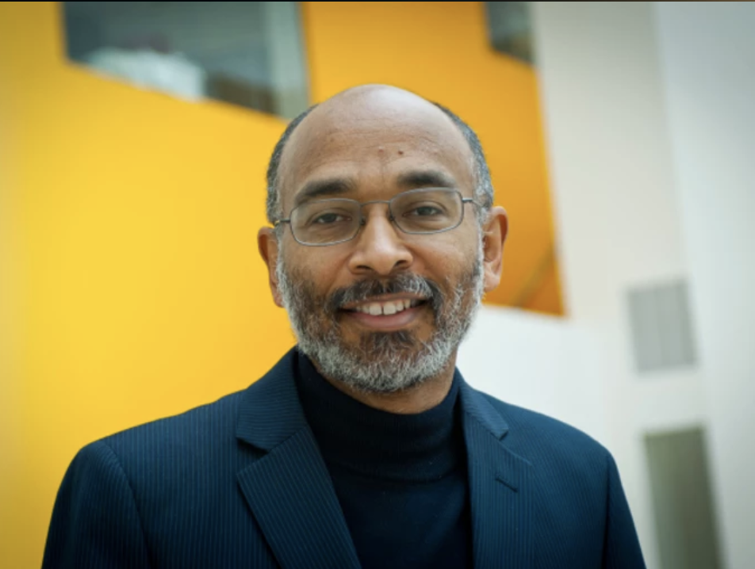

Born into poverty in 1966 in Miami, Florida, he is best known for his work on
drug abuse and drug addiction. His work on these topics has led him to be an advocate for decriminalization
for all drugs based upon the notions that our current drug policies are created from limited viewpoints and/or
inappropriate assumptions.

Emery Brown is the first African American, first statistician, and first anesthesiologist
that was elected to not one but all three branches of the National Academy (engineering, science, and medicine).
This is among the few societies he is a part of and he also received many awards for his work in both
neuroscience and statistics.
Once a professor at UNC Chapel Hill from 1979-1991, he is now affiliated with Syracuse
University, of which he has been an employee since 2008. Currently, he is a professor of both Biology and
Neuroscience and the Dean Emeritus of the College of Arts and Sciences. His main focus of research are the
actions of the actin cytoskeleton in health and disease.

Shweta Kapoor is an assistant professor at Emory University. Her specificalized area is
psychiatry and behavioral sciences. Her interested areas are chronic pain, severe, and persistent mental illness.
She has worked on and continues to do research with those areas of interest with a specific emphasis on pain
response.